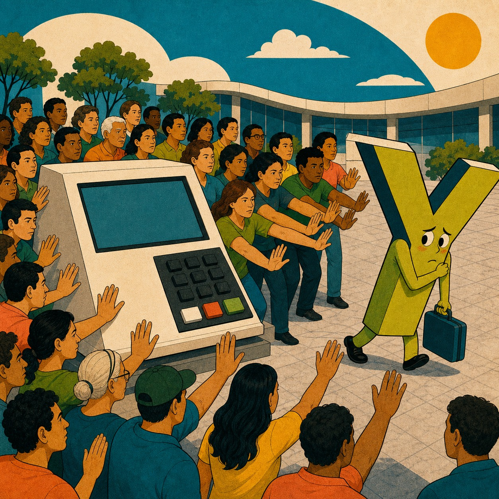

Arquivo de correlações espúrias
Todas as coincidências que já publicamos — cada uma com seu gráfico, suas fontes e a explicação de por que ela não significa nada.
O Data Folia é um projeto de humor com dados. Toda segunda-feira cruzamos duas séries públicas brasileiras (ou quase) que não têm absolutamente nada a ver uma com a outra — gols do Neymar e salário mínimo, capivaras e desemprego argentino, Palmeiras e bebês chamados Enzo — e mostramos que, ainda assim, elas apresentam correlação estatística altíssima. Em cima de cada coincidência, escrevemos uma teoria deliberadamente fictícia que finge explicar a relação.
As correlações são reais e calculadas com o coeficiente de Pearson a partir de fontes públicas listadas em cada página; as histórias são invenção pura. Cada publicação abaixo traz o gráfico, os dados, as fontes e uma seção séria explicando o fenômeno estatístico por trás da coincidência — amostras pequenas, tendências temporais paralelas, outliers e o nosso garimpo assumido de combinações. Para entender o método completo, leia a metodologia. Para rir semanalmente, siga o @datafolia no Instagram.

A Gangorra Celeste de Eike
Pontos do Cruzeiro no Brasileirão Série A (0 = ano em Série B/C) × Fortuna estimada de Eike Batista (USD bilhões) — auge e queda
r = −0,94
A Teoria do Chinelo Tricolor
Receita líquida da Alpargatas — dona da Havaianas (R$ bilhões) × Pontos do São Paulo no Brasileirão Série A (0 = ano em Série B/C)
r = −0,96
O Comitê Rubro-Negro Olímpico
Pontos do Flamengo no Brasileirão Série A (0 = ano em Série B/C) × Medalhas de ouro do Brasil nos Jogos Olímpicos de Verão
r = 0,96
O Paredão de Buenos Aires
Audiência da final do BBB (pontos médios, Grande SP — Kantar Ibope) × Taxa de desemprego na Argentina (%, média anual)
r = 0,95
A Urna Contra o Y
Eleitores aptos a votar em cada eleição (milhões) × Interesse no Google por 'Kely' no Brasil — proxy do nome (escala 0–100)
r = −1,00
A Fiel Descobriu Riquelme
Sócios torcedores ativos do Corinthians — Fiel Torcedor (mil) × Interesse no Google por 'Riquelme' no Brasil — proxy do nome (escala 0–100)
r = 0,96O Plano Austral para o Mercado Argentino
População estimada de coelhos selvagens na Austrália (milhões) × Taxa de desemprego na Argentina (%, média anual)
r = 0,98
O Galo, a Sorte e o Bolão Nacional
Pontos do Atlético Mineiro no Brasileirão Série A (0 = ano em Série B/C) × Interesse no Google por 'mega sena' (média anual, escala 0–100)
r = 0,97
O Efeito Chinelo na Cobertura de Ouro
Receita líquida da Alpargatas — dona da Havaianas (R$ bilhões) × Fortuna estimada de Donald Trump (USD bilhões)
r = 0,97Quando o Corinthians Confere os Números
Pontos do Corinthians no Brasileirão Série A (0 = ano em Série B/C) × Interesse no Google por 'mega sena' (média anual, escala 0–100)
r = 0,97
O Galo no Pomar do Pistache
Pontos do Atlético Mineiro no Brasileirão Série A (0 = ano em Série B/C) × Produção mundial de pistache (mil toneladas)
r = 0,93
A Capivara de Rebaixamento Celeste
Pontos do Cruzeiro no Brasileirão Série A (0 = ano em Série B/C) × Interesse no Google por capivara (escala 0-100)
r = −0,97
O Café da Manhã Demográfico
Idade da Ana Maria Braga (anos completos em 1º/abril) × População do Japão (milhões)
r = −0,99
A Macroeconomia da Capivara
Taxa de desemprego na Argentina (%, média anual) × Interesse no Google por capivara (escala 0-100)
r = 0,96
O Bloco Transpacífico dos Coelhos
Público do Carnaval de rua do Rio de Janeiro (milhões) × População estimada de coelhos selvagens na Austrália (milhões)
r = 0,96
A Lei Gaúcha do Riquelme
Pontos do Grêmio no Brasileirão Série A (0 = ano em Série B/C) × Interesse no Google por 'Riquelme' no Brasil — proxy do nome (escala 0–100)
r = −0,97
O Artilheiro que Rouba o Pódio
Gols do artilheiro da Série A do Brasileirão por temporada × Total de medalhas do Brasil nos Jogos Olímpicos de Verão
r = −0,99
O Protocolo Alemão da Finalização
Gols do Cristiano Ronaldo por ano civil (clube + seleção) × Taxa de desemprego na Alemanha (%, ILO modelado)
r = −0,97O Imposto Sobre o Drible
Gols do Neymar por ano civil (clube + seleção) × Salário mínimo nominal — valor vigente em dezembro (R$)
r = −0,99
O Especial que Abre o Gol
Gols do Messi por ano civil (clube + seleção) × Especial de Fim de Ano do Roberto Carlos na Globo (1=sim, 0=não)
r = 0,93
O Enzo e a Entressafra Palmeirense
Pontos do Palmeiras no Brasileirão Série A (0 = ano em Série B/C) × Interesse no Google por 'Enzo' no Brasil — proxy do nome (escala 0–100)
r = −0,93A Bola na Rede do Paredão
Maior rejeição em paredão do BBB no ano (%) × Gols do Messi por ano civil (clube + seleção)
r = 0,95
O Seguro Patrimonial do Tornozelo
Fortuna estimada de Donald Trump (USD bilhões) × Contusões registradas do Neymar no ano
r = −0,86
A Esteira de Chinelo
Taxa de desemprego na Rússia (%, média anual) × Pares de Havaianas vendidos no Brasil (milhões)
r = −0,98